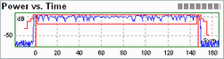

Limit Check
Limits specify the allowed range for a particular set of measurement results. Typically, limits are used to check whether a DUT conforms to the rated specifications (conformance testing):
- An upper limit Lupp defines the maximum value for the measurement result R: Lupp > R.
- A lower limit Llow defines the minimum value for the measurement result R: Llow < R.
- A symmetric limit Lsym defines the maximum value for the absolute value of the measurement result R: R must be in the symmetric range -Lsym < R < Lsym.
A limit check consists of comparing the measurement results to the limits and displaying a pass/fail indication.
The R&S CMW provides different tools for viewing limits and limit check results.
- Limit lines show the upper, lower, or symmetric limits for a series of measurement results (measurement trace). In the measurement diagrams, limit lines are displayed in red color. A limit line consisting of different sections is termed a template.
- A pass/fail indication in a table of measurement results shows the limit check result for a single or a statistical result.
The following example shows the template for an 8PSK-modulated GSM burst: To pass the limit check, all "Power vs. Time" results must be between the upper and the lower limit lines.

Example of limit lines (GSM)
The pass/fail indication in the result tables has the following meaning.
Pass/fail indication in tables
Symbol | Meaning |
|---|---|
(no indication) | Result passed |
Result too large, exceeds upper limit | |
Result too small, below lower limit | |
Result too large but not reliable, e.g. because
| |
Result too small but not reliable; see above | |
Result (probably) too large, but no valid result available | |
Result (probably) too small, but no valid result available |